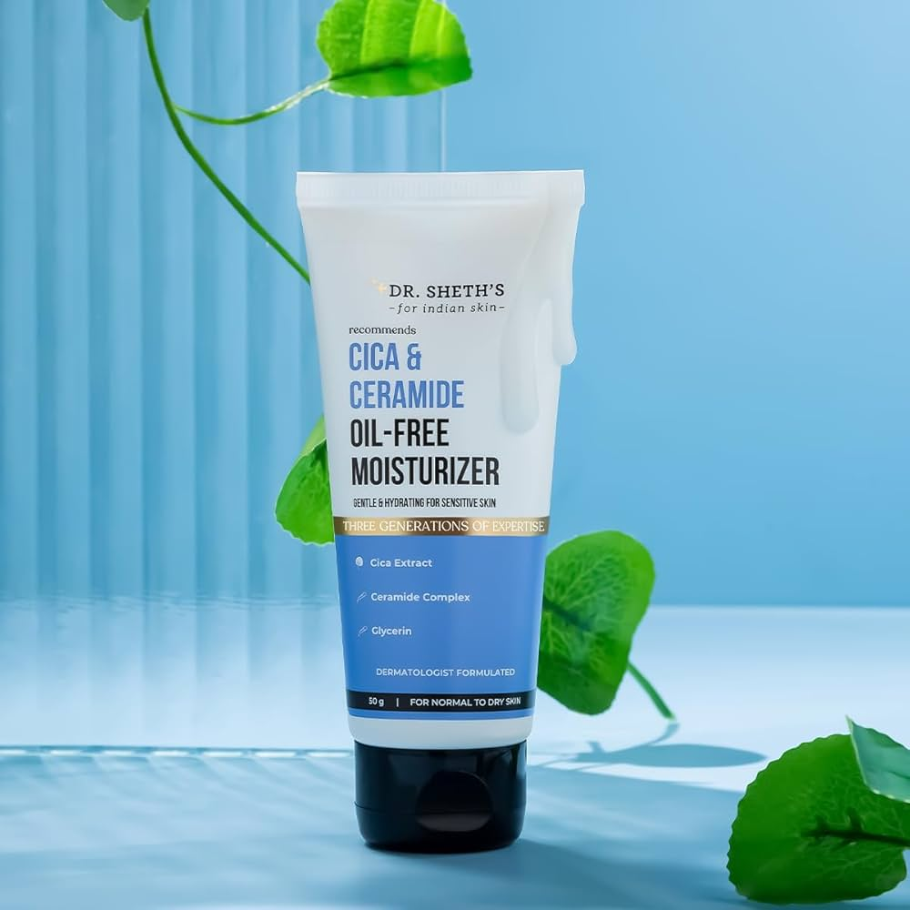
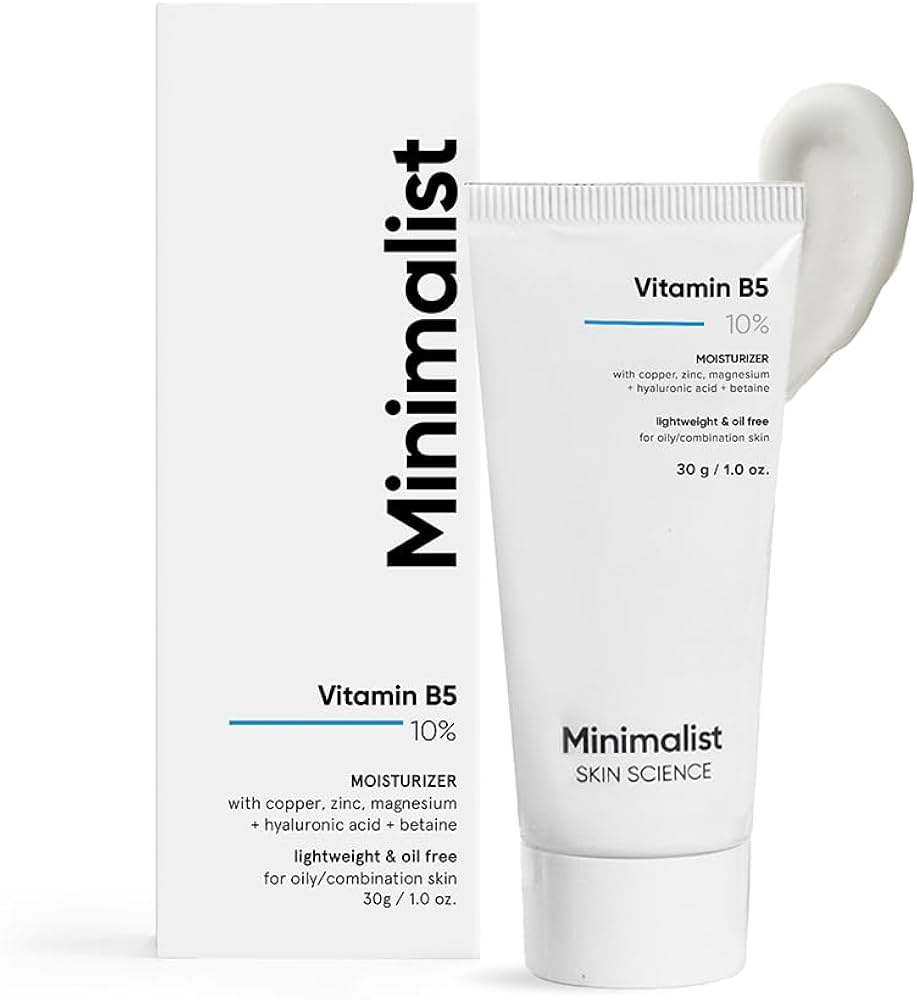

FOXTALE MOISTURIZER
Foxtale moisturizers are science-backed, vegan, and cruelty-free, featuring lightweight, non-greasy formulas suitable for all skin types. Popular options include the Vitamin C Super Glow Moisturizer for radiance and the Nourishing Ceramide Moisturiser for barrier repair. They focus on deep hydration using ingredients like Hyaluronic Acid, Niacinamide, and Ceramides to strengthen the skin barrier and prevent dryness.
Last updated 3 mins ago

CICA MOISTURIZER
Cica (Centella Asiatica) moisturizers are designed to calm, soothe, and hydrate sensitive, acne-prone, or irritated skin. These lightweight, often oil-free formulations repair the skin barrier, reduce redness, and fade acne marks using ingredients like cica, niacinamide, and ceramides. Key options include Dot & Key Cica + Niacinamide and Dr. Sheth’s Cica & Ceramide.
Last updated 3 mins ago

MINIMALIST MOISTURIZER
Minimalist moisturizers are high-performance, science-backed skincare products designed for specific skin types, featuring clean ingredients and transparent formulations. Key options include the oil-free, lightweight Vitamin B5 10% for oily/combination skin, and the Marula Oil 5% for dry skin, generally praised for being non-comedogenic and fragrance-free
Last updated 3 mins ago